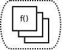
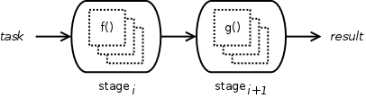
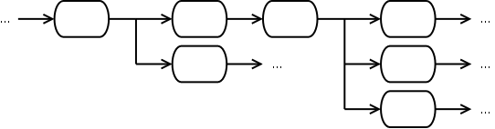

Pipelines are dynamic multi-processing workflows exhibiting some consistent patterns in their design:
A pipeline is then conceptually composed of stages, each stage being an assembly of a number of (identical) worker processes. Messages that flow down the pipeline, from stage to stage, are called tasks or results, depending on whether they’re viewed as input or output to a stage.
The unit of data that passes through the workflow is called a task when it is the input to a pipeline/stage/worker, and a result when it’s the output thereof.
Most often a data object is both, depending on the context – whether it’s viewed as the output of an upstream producer, or input to the downstream consumer. It can be any pickleable Python object: a standard Python data type like string or list, or a user-defined object. The only requirement is that it is picklable.
A worker is a basic unit of processing – it operates some activity on a task, and (usually) produces a result. The worker is where you implement some elemental functionality of your overall program.
A worker exists in a stage, alone or with other functionally identical workers, depending on how much system resources you choose to devote to that stage (each worker running in a separate process.)
The stage is an assembly of workers. It accepts a stream of input tasks, delegates them to its workers, and usually produces a stream of output results (products of its internal workers.) You can think of the stage as a corral of functionally identical workers, with added synchronization used to delegate tasks and organize results among the individual worker processes. The activity of the stage is therefore defined by the workers therein.
A stage can be linked to another stage to form a chain:
It can even be linked to multiple downstream stages, splitting the workflow into parallel execution paths.
The pipeline is composed of linked stages forming a unidirectional workflow.
Input tasks are fed into the most-upstream stage. Pipeline results, if any, are fetched from outputs of downstream stages.
A worker within a stage can operate in two different ways in relation to other workers: it can be arranged in a specific order with respect to its siblings, or unordered, functioning independently of other workers in the stage.
An ordered stage preserves a sequence among its workers, each worker having a previous and next neighbor worker, all workers thusly arranged in a circular fashion. It guarantees that inputs will be processed in this sequence, the previous worker operating on the previous task, and likewise the next one working on the task immediately after. Just as stage inputs are processed in order, stage outputs become available in the same sequence: the previous worker’s result showing up before the current worker’s, and the next one’s result after. In case a worker completes processing ahead of its previous neighbor, it waits for it, adding the result to stage output right after its predecessor. In other words, order of stage output results matches that of its input tasks.
An unordered stage adheres to no such symmetry among its worker processes. Each worker starts processing the earliest available task, and as soon as it’s done, makes the result available as stage output.
Choosing between the two depends on the nature of problem. Many signal processing applications require preserved order of inputs and outputs. On the other hand, certain file system tasks – like source code compiling – may safely ignore input/output sequences. And, naturally, if your stage operates just a single worker, it doesn’t matter which type you use: the output sequence will be ordered.
The gist of structuring your program as a pipeline is to maximize algorithm speed by utilizing additional processing facilities of multi-core and multi-CPU computers. Parallel processing manifests itself in a number of ways in the pipeline workflow:
The program is divided into a sequence of sub-algorithms. This benefits situations where the combined algorithm takes longer than the arrival interval between tasks. The pipeline can begin handling the next input task before the previous is completed.
If the input stream is even faster, such that computing time for a stage is longer that the interval between incoming tasks, additional workers at the stage can ameliorate a bottlenecked flow. Take a look at Multiple workers per stage for an illustration of potential speedup using this strategy.
If the program workflow can be split into multiple independent execution paths, then parallel paths can be processed simultaneously.